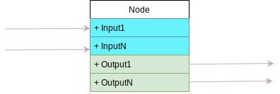
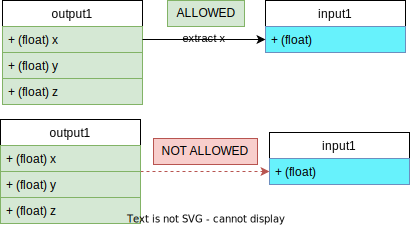

In MaterialX, shading computations are represented via a graph of nodes.
The basic components for all graphs are:
Notation: XML notation will be used to denote
types of components, such that a component is bracketed by start and end angle braces:
<
and
>. For example a node is denoted as <node>.
A <node> can be thought of as representing an atomic unit of computation. They
are
instances of node definitions
. Definitions determine the
public interface for a computation. Details about definitions can be found
here.
The API class is called Node.
There are various semantic types for nodes within MaterialX. For the purposes of shader computation, we will consider nodes which either:
Each node must have a unique string identifier (name). This identifier can only
contain
alphanumeric characters, excluding the path separator character: /.
To aid with identifier naming, Materialx provides identifier creation
utilities (e.g. createValidChildName()
)
For the purposes of illustration, rectangular boxes are used to denote nodes. For example, the following diagram shows 3 nodes named "node1", "node2", and "node3"
graph TD;
node1
node2
node3
Each node's definition is specified by an interface which contains 0 or more port elements or ports for short. All ports are "strongly typed" ( all ports must have a defined type ).
The API class for ports is PortElement.
<input>)<output>).type is defined by the API class TypedElement,
Types are defined as part of the standard library definitions using
a `color3 to represent 3 channel colors.While a definition specifies the entire interface, it is not required that any of these ports be explicitly specified on the node instance:
Notation: A dot (".") will be used to indicate that an input or output is part of a node. Thus in the diagram shown, the notation used to indicate "Input1" would be "Node.Input1".

A graph element is a container for a set of nodes.
The API class is called GraphElement.
Graph elements themselves cannot be created. Instead either of the following can be instantiated:
Document: A MaterialX document (<document>) is a top
level
container
which can be thought as corresponding to a single "file". The API class: Document.
Node graph: A container which resides within a document or another node
graph
<nodegraph>. The API class is: NodeGraph.
Graph elements can contain:
<input>s or <output>s.Direct children of a graph element are considered to be in scope.
The follow scoping rules apply:
<document>s and <nodegraph>s cannot contain child
<document>s. There is no concept of a document referencing another document.
<input>s cannot be instantiated as direct children of a
<document>.
(1) Note that <document>s have no identifier by default.
The diagram below shows a <document> with valid children. "my_node"
is a
node
instance, and "my_nodegraph" a node graph.
graph TD
subgraph document
my_node
subgraph my_nodegraph
end
endThis example shows valid children for a node graph called "my_nodegraph"
<input> called "input1",<output> called "output1"<nodegraph> called "nodegraph2" which contains a child node
called "node2"graph TD
subgraph nodegraph2
node2
end
subgraph my_nodegraph
input1(input1)
style input1 fill:#1b1,color:#fff
output1(output1)
style output1 fill:#0bb,color:#fff
node1
nodegraph2
end
Parent / child relationships can be described using a string path with forward-slashes ("/") being used as path separators:
<parent identifier>/<child identifier>
In the above example, the path to "node2" would be
my_nodegraph/nodegraph2/node2
while
the
path to input1 is my_nodegraph.input1.
Connections can be formed between node instance or nodegraph ports to create graphs. While node graphs can have no outputs, they generally of no use as they cannot be connected to anything.
The following is an example of a node and a node graph showing various typed inputs and outputs.
These <input>s and <output>s on <node>s
or
<nodegraph>s define what is connectable.
Key attributes to consider for connectivity for an <input> includes:
type: Every port has a type with the list of valid types defined by
the standard library definitions. float and integer tuples and arrays
as well as string and filename are common types.uniform: A input can be marked as only accepting uniform values (non-varying
across input geometry).channel: An input can indicate that a specific channel be extracted from incoming
data
. For example the x channel of a vector can be extracted. A "dot"
notation is used to specified channels on data<type>.<channel identifier>The rules for connection validity are as follows. It is assumed that all connections are within the same scope.
<node> or <nodegraph> <output> may
be
connected
one or more <input>s on another node or nodegraph
<input>.
<output> can connect to one or more <inputs>.
(fan-out
allowed)
<input> can be connected to at most one <output>.
(fan-in
disallowed)types cannot be connected. This takes in to consideration the
type
produced after applying any channel extraction.
For example, a single channel
which is extracted from a float vector can be connected to a float input.

uniform attributes values cannot be connected.string and filename typed constants can be connected to
filename
types.
For a given connection the source node / port is considered to be upstream of the second node / port, which is downstream.
The following is an example diagram showing how inputs, outputs and connections are drawn:
input and upstream outputs are color-coded rounded
rectangles.
graph LR;
input1(input1)
output1(output1)
style output1 fill:#1b1,color:#fff
style input1 fill:#0bb,color:#fff
output1 --> input1The possible pair-wise configurations are shown below:
node1's input input1 is connected
to
node2's output called output1.
graph LR;
input1(node1.input1)
output1(node2.output1)
style output1 fill:#1b1,color:#fff
style input1 fill:#0bb,color:#fff
output1 --> input1 graph LR;
output1(node.output1)
subgraph nodegraph
input1(.input1)
end
style output1 fill:#1b1,color:#fff
style input1 fill:#0bb,color:#fff
output1 --> input1 graph LR;
subgraph nodegraph
output1(.output1)
end
input1(node.input1)
style output1 fill:#1b1,color:#fff
style input1 fill:#0bb,color:#fff
output1 --> input1
graph LR;
subgraph nodegraph3
output1(.output1)
end
subgraph nodegraph
input1(.input1)
end
style output1 fill:#1b1,color:#fff
style input1 fill:#0bb,color:#fff
output1 --> input1nodegraph3.
graph TB
node3(node3.out) --> node2(node2.in1)
node2 --> node0.input1(.input1)
node2 --> nodegraph2.input2(.input2)
subgraph nodegraph3;
nodegraph3.output1(.output1)
end
nodegraph3.output1 --> node0.input2(.input2)
nodegraph3.output1 --> nodegraph2.input1(.input1)
subgraph node0;
node0.output1(.output1)
node0.input2
node0.input1
end
subgraph nodegraph2;
nodegraph2.input1(.input1)
nodegraph2.input2(.input2)
nodegraph2.output1(.output1)
end
subgraph node1
node0.output1 --> node1.input1(.input1)
nodegraph2.output1 --> node1.input2(.input2)
end
style node3 fill:#1b1,color:#fff
style node0.output1 fill:#1b1,color:#fff
style nodegraph3.output1 fill:#1b1,color:#fff
style nodegraph2.output1 fill:#1b1,color:#fff
style node0.input1 fill:#0bb,color:#fff
style node0.input2 fill:#0bb,color:#fff
style nodegraph2.input1 fill:#0bb,color:#fff
style nodegraph2.input2 fill:#0bb,color:#fff
style node2 fill:#0bb,color:#fff
style node1.input1 fill:#0bb,color:#fff
style node1.input2 fill:#0bb,color:#fff
The direct <input> and <output> children of a
<nodegraph> are considered to be the exposed interface of the
graph.
It is only through these interfaces that connections can be made to ports which are outside the scope of the nodegraph. These interfaces can in turn be connected to node ports within the scope of the node graph such that:
<nodegraph> <input> may be connected to one or more
node's
<input> within the same graph.
graph TB
subgraph nodegraph2
.input1(.input1) --> node1.input1
.input1 --> node2.input2
.input2(.input2) --> node2.input1
style .input1 fill:#1b1,color:#fff
style .input2 fill:#1b1,color:#fff
end
<output>s of a node within the same nodegraph may be connected to one
or
more nodegraph outputs.